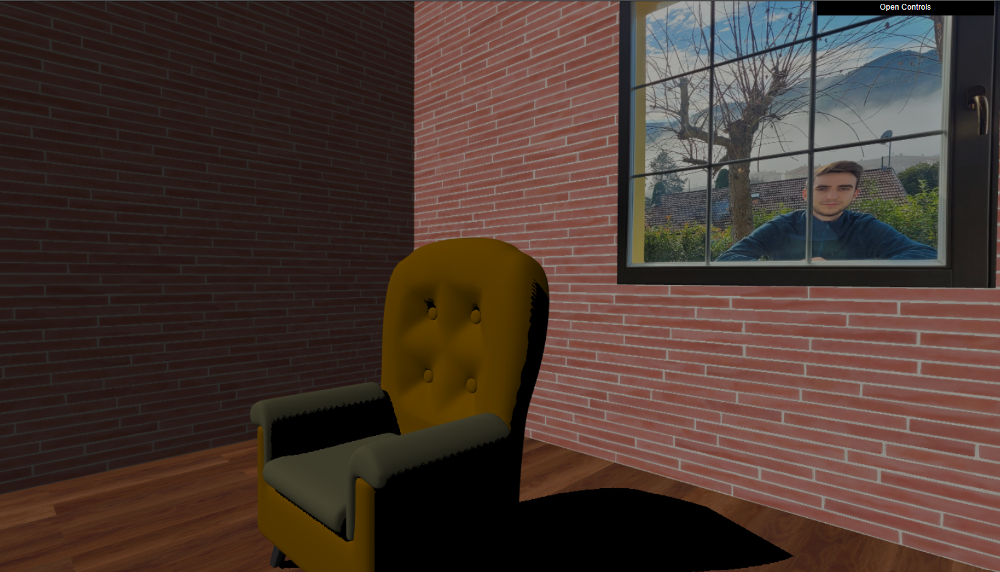
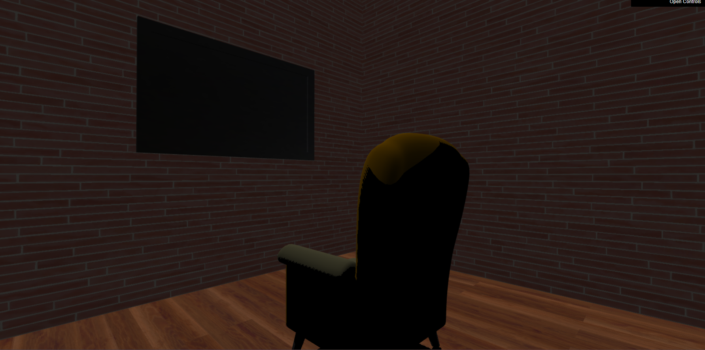
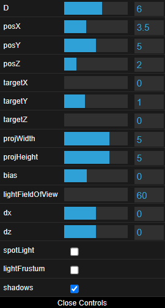

Project Room
Progetto del corso di Fondamenti di Computer Graphics, anno 2021-2022. L'idea del progetto è nata pensando alla quarantena passata in casa causa Covid-19 che molte persone, tra cui me, hanno dovuto fare in questi anni.
Gli elementi che compongono la scena sono:
- una poltrona
- una tv
- una finestra
- le pareti della stanza
- il pavimento
- il soffitto
- una luce ambientale
- una luce direzionale/spot
- una camera da cui l'utente vede la scena
Il soggetto principale è la poltrona, attorno cui il resto della scena è stata costruita.
L'interazione con la scena avviene tramite il mouse, la tastiera e un pannello di controllo. Come richiesto, è possibile usufruire dell'applicazione anche da un dispositivo mobile.
La scena necessita di circa un secondo per essere renderizzata la prima volta, in quanto vengono utilizzate svariate texture di dimensioni nell'ordine dei MB.


Caratteristiche dell'applicazione
Dettagli degli elementi
Gli oggetti della scena sono stati realizzati in due modi diversi, i più semplici da modellare tramite definizione diretta della geometria nel codice, mentre i più complicati utilizzando Blender.
Gli elementi definiti direttamente nel codice javascript sono:
- il pavimento, a cui è stata applicata una texture di parquet
- 3 muri, a cui è stata applicata una texture di mattoni
- il soffitto a cui è stata applicata sempre una texture di mattoni
Gli elementi creati in Blender, successivamente importati nel codice javascript tramite file .obj e .mtl, sono:
- la poltrona, a cui sono state applicate due colorazioni
- la tv, a cui è stata applicata una texture
- il muro con lo spazio per la finestra, a cui è stata anche in questo caso applicata una texture di mattoni
- il piano che rappresenta la finestra a cui è stata applicata l'immagine di me dietro ad una finestra reale
La poltrona è stato l'elemento più complicato da modellare in quanto è stato necessario utilizzare svariate tecniche per la sua creazione, quali: extrusion, loop cutting, surface subdivisioning, smooth shading, poking, beveling e mirroring.
Illuminazione
L'intera scena è illuminata da una luce ambientale che rende visibili tutti gli elementi, anche quelli che non sarebbero visibili perchè esclusi dall'illuminazione della sorgente luminosa.
L'lluminazione ambientale è implementata tramite un controllo inserito all'interno del fragment shader: tutti i pixel che presentano un intensità di colore inferiore a 0.3 vengono portati ad un'intensità di 0.3 .
Per quanto riguarda la sorgente luminosa, questa può essere di tipo direzionale o spot, può essere spostata all'interno della scena e può illuminare diverse posizioni dello spazio.
Ombreggiatura
E' possibile attivare l'ombreggiatura, generata grazie al calcolo della profondità dei pixel rispetto alla sorgente luminosa e al resto della scena.

Interazione utente
L'interazione avviene tramite l'utilizzo del mouse, della tastiera e del pannello di controllo a schermo.
Tenendo premuto un pulsante del mouse e muovendolo si può spostare l'angolazione da cui si vede la scena, mentre le frecce direzionali della tastiera permettono di spostare la poltrona all'interno della stanza.
Il pannello di controllo presenta invece diversi parametri modificabili:
- "D" permette di allontare o avvicinare la camera al soggetto principale
- "posx", "posY", "posZ" definiscono la posizione della sorgente luminosa nella scena
- "targetX", "targetY", "targetZ" definiscono la posizione dell'obiettivo verso cui la sorgente luminosa punta
- "projWidth" e "projHeigth" permettono di modificare la definizione della sorgente luminosa
- "bias" permette di diminuire o aumentare la presenza dell'effetto chiamato "shadow acne"
- "lightFielOfView" permette di modificare il campo visivo della sorgente luminosa, parametro che influisce solo sulla sorgente luminosa spot
- "spotLight" permette di definire il tipo di illuminazione, direzionale o spot
- "lightFrustum" permette di visualizzare il frustum della sorgente luminosa
- "shadows" permette di abilitare/disabilitare le ombre
Utilizzo su dispositivi mobile
Essendo questa un'applicazione web, l'utilizzo su un disposito mobile risulta essere semplificato. L'interazione avviene tramite i tocchi sullo schermo invece che tramite il mouse/tastiera, i quali vengono catturati e gestiti adeguatamente dall'applicazione.
Lo spostamento della poltrona all'interno della scena può essere fatto tramite il pannello di controllo vista la mancanza della tastiera.